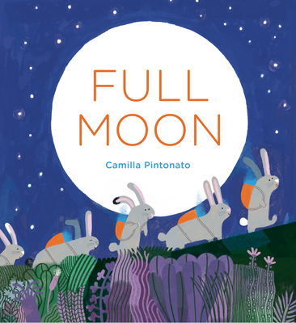

word by Camilla Pintonato
In the quiet forest, the rabbits hids, eagerly waiting for the sun to set.
One sticks out its little nose. Is it dark yet?
Five little gray rabbits hop out of their burrow and set out on a journey into the night. Where are they going?
What are they carrying in their backpacks? Something round, bright, and beautiful.
In their secret workshop, the rabbits are very busy! What are they making?
Eagerly waiting for th moon to rise, the little gray rabbits print, cut, and stack, preparing for a celebration.
Now what are they carrying in their backpacks? A drawing, a letter, an invitation?
Feathered friends, please join us! There is a full moon tonight!
Mouse family, please join us for the big event! Everyone is invited.
Soon the moon is high in the sky!
The guests follow the rabbits through the forest to gather together underneath the stars.
The rabbits show them where to sit for the big surprise. Places! Wait! Ready? Go!
As the birds begin to sing, the lanterns lift up into the sky.
The little gray rabbits and their friends are dazzled by the light.
Before their eyes, the full moon shines bright. The paper lanterns sparkle like stars.
When the show is over, the creatures scurry home to dream of the moon and the stars and th lanterns setting the night sky aglow.
The full moon sets and gives way to the sun.
And in their cozy burrow, the little gray rabbits have hidden themselves once again, awaiting the next full moon celebration.
Will you join them?
05/26/2023